소방설비산업기사(기계) (2019-04-27 기출문제)
1과목: 소방원론
1. 건물 내 피난동선의 조건에 대한 설명으로 옳은 것은?
- 피난동선은 그 말단이 길수록 좋다.
- 모든 피난동선은 건물 중심부 한곳으로 향해야 한다.
- 피난동선의 한쪽은 막다른 통로와 연결되어 화재 시 연소가 되지 않도록 하여야 한다.
- 2개 이상의 방향으로 피난할 수 있으며 그 말단은 화재로부터 안전한 장소이어야 한다.
(정답률: 82%)

2. 부피비가 메탄 80%, 에탄 15%, 프로판 4%, 부탄 1%인 혼합기체가 있다. 이 기체의 공기 중 폭발 하한계는 약 몇 vol% 인가? (단, 공기 중 단일 가스의 폭발 하한계는 메탄 5 vol%, 에탄 2 vol%, 프로판 2 vol%, 부탄 1.8 vol% 이다.)
- 2.2
- 3.8
- 4.9
- 6.2
(정답률: 73%)
3. 촛불(양초)의 연소형태로 옳은 것은?
- 증발연소
- 액적연소
- 표면연소
- 자기연소
(정답률: 76%)
4. 화재발생시 물을 사용하여 소화하면 더 위험해지는 것은?
- 적린
- 질산암모늄
- 나트륨
- 황린
(정답률: 73%)
5. 다음 중 연소시 발생하는 가스로 독성이 가장 강한 것은?
- 수소
- 질소
- 이산화탄소
- 일산화탄소
(정답률: 79%)
6. 식용유 화재시 가연물과 결하하여 비누화 반응을 일으키는 소화약제는?
- 물
- Halon 1301
- 제1종 분말소화약제
- 이산화탄소소화약제
(정답률: 68%)
7. 0℃얼음 1g이 100℃의 수증기가 되려면 몇 cal 의 열량이 필요한가? (단, 0℃ 얼음의 융해열은 80 cal/g 이고 100℃ 물의 증발잠열은 539 cal/g 이다.)
- 539
- 719
- 939
- 1119
(정답률: 77%)
8. 제3종 분말 소화약제의 주성분은?
- 요소
- 탄산수소나트륨
- 제1인산암모늄
- 탄산수소칼륨
(정답률: 80%)
9. 다른곳에서 화원, 전기스파크 등의 착화원을 부여하지 않고 가연성 물질을 공기 또는 산소 중에서 가열함으로서 발화 또는 폭발을 일으키는 최저온도를 나타내는 용어는?
- 인화점
- 발열점
- 연소점
- 발화점
(정답률: 63%)
10. 벤젠 화재 시 이산화탄소 소하약제를 사용하여 소화하는 경우 한계산소량은 약 몇 vol% 인가?
- 14
- 19
- 24
- 28
(정답률: 59%)
11. 건물화재에서 플래시 오버(flash over)에 관한 설명으로 옳은 것은?
- 가연물이 착화되는 초기 단계에서 발생한다.
- 화재시 발생한 가연성 가스가 축적되다가 일순간에 화염이 실 전체로 확대되는 현상을 말한다.
- 소화활동이 끝난 단계에서 발생한다.
- 화재시 모두 연소하여 자연 진화된 상태를 말한다.
(정답률: 84%)
12. 분무연소에 대한 설명으로 틀린 것은?
- 휘발성이 낮은 액체연료의 연소가 여기에 해당된다.
- 점도가 높은 중질유의 연소에 많이 이용된다.
- 약체연료를 수 μm ~ 수백 μm 크기의 액적으로 미립화 시켜 연소시킨다.
- 미세한 액적으로 분무시키는 이유는 표면적을 작게 하여 공기와의 혼합을 좋게 하기 위함이다.
(정답률: 56%)
13. 이산화탄소 소화약제가 공기 중에 34vol% 공급되면 산소의 농도는 약 몇 vol% 가 되는가?
- 12
- 14
- 16
- 18
(정답률: 60%)
14. 다음 중 증기밀도가 가장 큰 것은?
- 공기
- 메탄
- 부탄
- 에틸렌
(정답률: 49%)
15. 탄화칼슘이 물과 반응할 때 생성되는 가연성가스는?
- 메탄
- 에탄
- 아세틸렌
- 프로필렌
(정답률: 73%)
16. 다음 중 황린의 완전 연소시에 주로 발생되는 물질은?
- P2O
- PO2
- P2O3
- P2O5
(정답률: 66%)
17. 다음 중 인화점이 가장 낮은 물질은?
- 등유
- 아세톤
- 경유
- 아세트산
(정답률: 58%)
18. 화재를 소화시키는 소화작용이 아닌 것은?
- 냉각작용
- 질식작용
- 부촉매작용
- 활성화작용
(정답률: 83%)
19. 소방안전관리대상물에서 소방안전관리자가 작성하는 것으로, 소방계획서 내에 포함되지 않는 것은?
- 화재예방을 위한 자체검사계획
- 화재시 화재실 진입에 따른 전술 계획
- 소방시설·피난시설 및 방화시설의 점검·장비계획
- 소방훈련 및 교육계획
(정답률: 66%)
20. 소화약제에 대한 설명 중 옳은 것은?
- 물이 냉각효과가 가장 큰 이유는 비열과 증발잠열이 크기 때문이다.
- 이산화탄소 순도가 95.0% 이상인 것을 소화약제로 사용해야 한다.
- 할론 2402는 상온에서 기체로 존재하므로 저장 시에는 액화시켜 저장한다.
- 이산화탄소는 전기적으로 비전도성이며 공기보다 3배 정도 무거운 기체이다.
(정답률: 68%)
2과목: 소방유체역학
21. 압력은 0.1MPa 이고 비체적은 0.8m3/kg 인 기체를 다음과 같은 폴리트로픽 과정을 거쳐 압력을 0.2MPa 로 압축하였을 때의 비체적은 약 몇 m3/kg 인가? (단, 이 기체의 n은 1.4 이다.)
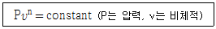
- 0.42
- 0.49
- 0.84
- 0.98
(정답률: 45%)
22. 작동원리와 구조를 기준으로 펌프를 분류할 때 터보형 중에서 원심식 펌프에 속하는 것은?
- 기어 펌프
- 벌류트 펌프
- 피스톤 펌프
- 플런저 펌프
(정답률: 51%)
23. 평면벽을 통해 전도되는 열전달량에 대한 설명으로 옳은 것은?
- 면적과 온도차에 비례한다.
- 면적과 온도차에 반비례한다.
- 면적에 비례하여 온도차에 반비례한다.
- 면적에 반비례하며 온도차에 비례한다.
(정답률: 52%)
24. 그림과 같이 거리 b만큰 떨어진 평행평판 사이에 점성계수 μ인 유체가 채워져 있다. 위판이 동쪽으로, 아래판은 북쪽으로 일정한 속도 V로 움직일 때, 위판이 받는 전단응력은? (단, 평판 내 유체의 속도분포는 선형적이다.)
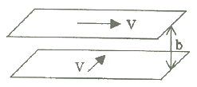
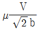
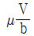
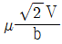
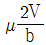
(정답률: 52%)
25. 어떤 기술자가 펌프에서 일어나는 수격현상을 방지하기 위한 방안으로 다음과 같은 방법을 제시하였는데 이 중 옳은 방지법을 모두 고른 것은?
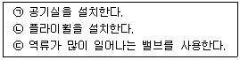
- ㉠, ㉡
- ㉠, ㉢
- ㉡, ㉢
- ㉠, ㉡, ㉢
(정답률: 64%)
26. 다음 용어의 정의들 중 잘못된 것은?
- 뉴턴의 점성법칙을 만족하는 유체를 뉴턴의 유체라고 한다.
- 시간에 따라 유동형태가 변화하지 않는 유체를 비정상유체라고 한다.
- 큰 압력변화에 대하여 체적변화가 없는 유체를 비압축성유체라고 한다.
- 입자의 상대운동에 저해하려는 성질을 점성이라고 하고 이러한 성질을 가진 유체를 점성유체라고 한다.
(정답률: 49%)
27. 그림과 같이 입구와 출구가 β의 각을 이루고 있는 고정된 판에 질량유량
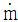
의 분류가 V의 속도로 충돌하고 있다. 분류에 의해 판이 받는 힘의 크기는?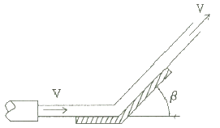
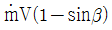
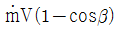
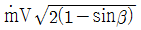
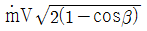
(정답률: 41%)
28. 비중량이 9806N/m3인 유체를 전양정 95m에 70m3/min 의 유량으로 송수하려고 한다. 이때 소요되는 펌프의 수동력은 약 몇 kW 인가?
- 1⑤4
- 1063
- 1071
- 1087
(정답률: 49%)
29. 배관에서 소화약제 압송 시 발생하는 손실은 주손실과 부차적 손실로 구분할 수 있다. 다음 중 부차적 손실을 야기하는 요소는?
- 마찰계수
- 상대조도
- 배관의 길이
- 배관의 급격한 확대
(정답률: 52%)
30. 액면으로부터 40m인 지점의 계기압력이 515.8kPa 일 때 이 액체의 비중량은 몇 kN/m3 인가?
- 11.8
- 12.9
- 14.2
- 16.4
(정답률: 58%)
31. 물이 흐르고 있는 관내에 피토정압관을 넣어 정체압 Ps와 정압 Po을 측정하였더니, 수은이 들어있는 피토정압관에 연결한 U자관에서 75mm의 액면차가 생겼다. 피토정압관 위치에서의 유속은 몇 m/s 인가? (단, 수운의 비중은 13.6 이다.)
- 4.3
- 4.45
- 4.6
- 4.75
(정답률: 30%)
32. 기체가 0.3MPa의 일정한 압력하에 8m3에서 4m3까지 마찰 없이 압축되면서 동시에 500kJ의 열을 외부에 방출하였다면, 내부에너지(kJ)의 변화는 어떻게 되는가?
- 700kJ 증가하였다.
- 1700kJ 증가하였다.
- 1200kJ 증가하였다.
- 1500kJ 증가하였다.
(정답률: 39%)
33. 비중이 1.03인 바닷물에 전체부피의 90%가 잠겨 있는 빙산이 있다. 이 빙산의 비중은 얼마인가?
- 0.856
- 0.956
- 0.927
- 0.882
(정답률: 62%)
34. 지름 1m인 곧은 수평원관에서 층류로 흐를 수 있는 유체의 최대 평균 속도는 몇 m/s 인가? (단, 임계 레이놀즈(Reynolds) 수는 2000이고, 유체의 동점성계수는 4×10-4 m2/s 이다.)
- 0.4
- 0.8
- 40
- 80
(정답률: 58%)
35. 안지름 65mm 의 관내를 유량 0.24 m3/min 로 물이 흘러간다면 평균 유속은 약 몇 m/s 인가?
- 1.2
- 2.4
- 3.6
- 4.8
(정답률: 48%)
36. 원통형 탱크(지름 3m)에 물이 3m 깊이로 채워져 있다. 물의 비중을 1이라 할 때, 물에 의해 탱크 밑면에 받는 힘은 약 몇 kN 인가?
- 62.9
- 102
- 165
- 208
(정답률: 38%)
37. 압력 1.5MPa, 온도 300℃인 과열증기를 질량유량 18000kg/h 가 되도록 총 길이 20m 인 관로에 유속 30m/s로 유동시킬 때 압력강하는 약 몇 Pa 인가? (단, 압력 1.5MPa, 온도 300℃인 과열증기의 비체적은 0.1697 m3/kg이고, 관마찰계수는 0.02 이다.)
- 5459
- 5588
- 5696
- 5723
(정답률: 44%)
38. 관 출구 단면적이 입구 단면적의 1/2 이고, 마찰손실을 무시하였을 때, 압력계 P의 계기압력은 얼마인가? (단, 유속 V=5m/s, 입구단면적 A=0.01m2, 대기압=101.3 kPa, 밀도=1000kg/m3 이다.)
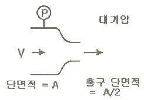
- 375 Pa
- 12.5 kPa
- 37.5 kPa
- 138.8 kPa
(정답률: 37%)
39. 진공 밀폐된 20m3의 방호구역에 이산화탄소 약제를 방사하여 30℃, 101kPa 상태가 되었다. 이때 방사된 이산화탄소량은 약 몇 kg 인가? (단, 일반 기체상수는 8.314 kJ/(kmol·K) 이다.)
- 33.6
- 35.3
- 37.1
- 39.2
(정답률: 43%)
40. 다음 그림에서 A점의 계기 압력은 약 몇 kPa 인가?
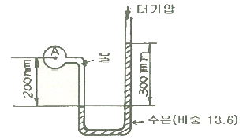
- 0.38
- 38
- 0.42
- 42
(정답률: 47%)
3과목: 소방관계법규
41. 위험물안전관리법상 지정수량 미만인 위험물의 저장 또는 취급에 관한 기술상의 기준은 무엇으로 정하는가?
- 대통령령
- 국무총리령
- 시·도의 조례
- 행정안전부령
(정답률: 53%)
42. 소방시설 중 경보설비에 속하지 않는 것은?
- 통합감시시설
- 자동화재탐지설비
- 자동화재속보설비
- 무선통신보조설비
(정답률: 60%)
43. 화재를 진압하고 화재, 재난·재해, 그 밖의 위급한 상황에서 구조·구급 활동 등을 하기 위하여 소방공무원, 의무소방원, 의용소방대원으로 구성된 조직체는?
- 구조구급대
- 소방대
- 의무소방대
- 의용소방대
(정답률: 69%)
44. 소방시설공사업법상 지방소방기술심의 위원회의 심의사항은?
- 화재안전기준에 관한 사항
- 소방시설의 성능위주설계에 관한 사항
- 소방시설의 하자가 있는지의 판단에 관한 사항
- 소방시설의 설계 및 공사감리의 방법에 관한 사항
(정답률: 51%)
45. 화재예방, 소방시설 설치·유지 및 안전관리에 관한 법령상 방염성능기준으로 틀린 것은?
- 버너의 불꽃을 제거한 때부터 불꽃을 올리며 연소하는 상태가 그칠 때까지 시간은 20초 이내
- 버너의 불꽃을 제거한 때부터 불꽃을 올리지 아니하고 연소하는 상태가 그칠 때까지 시간은 30초 이내
- 탄화한 면적은 50 cm2 이내, 탄화한 길이는 20cm 이내
- 불꽃에 의하여 완전히 녹을 때까지 불꽃의 접촉횟수는 2회 이상
(정답률: 52%)
46. 피난시설 및 방화시설에서 해서는 안 될 사항으로 틀린 것은?
- 피난시설, 방화구획 및 방화시설을 폐쇄하거나 훼손하는 등의 행위
- 피난시설, 방화구획 및 방화시설을 유지·관리하는 행위
- 피난시설, 방화구획 및 방화시설의 주위에 물건을 쌓는 행위
- 피난시설, 방화구획 및 방화시설의 용도에 장애를 주는 행위
(정답률: 74%)
47. 소방기본법상 화재의 예방조치 명령으로 틀린 것은?
- 불장난, 모닥불, 흡연, 화기 취급 및 풍등 등 소형 열기구 날리기의 금지 또는 제한
- 타고남은 불 또는 화기의 우려가 있는 재의 처리
- 함부로 버려두거나 그냥 둔 위험물, 그 밖에 불에 탈 수 있는 물건을 옮기거나 치우게 하는 등의 조치
- 불이 번지는 것을 막기 위하여 불이 번지 우려가 있는 소방대상물의 사용 제한
(정답률: 57%)
48. 제조 또는 가공 공정에서 방염처리를 하는 방염대상물품으로 틀린 것은? (단, 합판·목재류의 경우에는 설치 현장에서 방염처리를 한 것을 포함한다.)
- 카펫
- 창문에 설치하는 커튼류
- 두께가 2mm 미만인 종이벽지
- 전시용 합판 또는 섬유판
(정답률: 70%)
49. 제4류 위험물에 속하지 않는 것은?
- 아염소산염류
- 특수인화물
- 알코올류
- 동식물유류
(정답률: 64%)
50. 소방용수시설 저수조의 설치기준으로 틀린 것은?
- 지면으로부터의 낙차가 4.5m 이하일 것
- 흡수부분의 수심이 0.3m 이상일 것
- 흡수관의 투입구가 사각형의 경우에는 한 변의 길이가 60cm 이상일 것
- 흡수관의 투입구가 원형의 경우에는 지름이 60cm 이상일 것
(정답률: 61%)
51. 다음 ( ) 안에 들어갈 말로 옳은 것은?
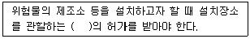
- 행정안전부장관
- 소방청장
- 경찰청장
- 시·도지사
(정답률: 72%)
52. 소방안전관리자를 선임하지 아니한 경우의 벌칙기준은?
- 100만원 이하 과태료
- 200만원 이하 벌금
- 200만원 이하 과태료
- 300만원 이하 벌금
(정답률: 56%)
53. 화재예방상 필요하다고 인정되거나 화재위험 경보시 발령하는 소방신호는?
- 경계신호
- 발화신호
- 해제신호
- 훈련신호
(정답률: 63%)
54. 소방기본법령상 소방용수시설 및 지리조사의 기준 중 ㉠, ㉡에 알맞은 것은?
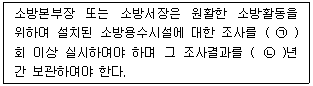
- ㉠ 월 1, ㉡ 1
- ㉠ 월 1, ㉡ 2
- ㉠ 연 1, ㉡ 1
- ㉠ 연 1, ㉡ 2
(정답률: 63%)
55. 소방시설공사업법상 특정소방대상물의 관계인 또는 발주자로부터 소방시설공사 등을 도급받은 소방시설업자가 제3자에게 소방시설공사 시공을 하도급할 수 없다. 이를 위반하는 경우의 벌칙기준은? (단, 대통령령으로 도급하는 소방시설공사의 일부를 한 번만 제3자에게 하도급할 수 있는 경우는 제외한다.)(오류 신고가 접수된 문제입니다. 반드시 정답과 해설을 확인하시기 바랍니다.)
- 100만원 이하의 벌금
- 300만원 이하의 벌금
- 1년 이하의 징역 또는 1000만원 이하의 벌금
- 3년 이하의 징역 또는 1500만원 이하의 벌금
(정답률: 56%)
56. 화재예방, 소방시설 설치·유지 및 안전관리에 관한 법령상 소방용품으로 틀린 것은?
- 시각경보기
- 자동소화장치
- 가스누설경보기
- 방염제
(정답률: 35%)
57. 위험물 제조소에 환기설비를 설치할 경우 바닥면적이 100m2 이면 급기구의 면적은 몇 cm2 이상이어야 하는가?
- 150
- 300
- 450
- 600
(정답률: 45%)
58. 화재예방, 소방시설 설치·유지 및 유지관리에 관한 법령상 종합정밀점검을 실시하여야 하는 특정소방대상물의 기준 중 틀린 것은?
- 스프링클러설비 또는 물분무등소화설비(호스릴 방식의 물분무등소화설비만을 설치한 경우는 제외)가 설치된 연면적 5000m2 이상이고 11층 이상인 아파트
- 스프링클러설비 또는 물분무등소화설비(호스릴 방식의 물분무등소화설비만을 설치한 경우는 제외)가 설치된 연면적 5000m2 이상인 특정소방대상물(위험물 제조소등은 제외)
- 공공기관 중 연면적이 1000m2 이상인 것으로서 옥내소화전 설비 또는 자동화재탐지설비가 설치된 것(소방대가 근무하는 공공기관은 제외)
- 노래연습장업이 설치된 특정소방대상물로서 연면적이 1500m2 이상인 것
(정답률: 40%)
59. 소방특별조사를 실시할 수 있는 경우로 틀린 것은?
- 화재가 자주 발생하였거나 발생할 우려가 뚜렷한 곳에 대한 점검이 필요한 경우
- 재난예측정도, 기상예보 등을 분석한 결과 소방대상물에 화재, 재난·재해의 발생 위험이 높다고 판단되는 경우
- 화재, 재난·재해 등이 발생할 경우 인명 또는 재산 피해의 우려가 없다고 판단되는 경우
- 관계인이 실시하는 소방시설 등에 대한 자체점검 등이 불성실하거나 불완전하다고 인정되는 경우
(정답률: 69%)
60. 공사업자가 소방시설공사를 마친 때에는 누구에게 완공검사를 받는가?
- 소방본부장 또는 소방서장
- 군수
- 시·도지사
- 소방청장
(정답률: 58%)
4과목: 소방기계시설의 구조 및 원리
61. 옥외소화전에 관한 설명으로 옳은 것은?
- 호스는 구경 40mm의 것으로 한다.
- 노즐 선단에서 방수압력 0.17MPa 이상, 방수량이 130L/min 이상의 가압송수장치가 필요하다.
- 압력챔버를 사용할 경우 그 용적은 50L 이하의 것으로 한다.
- 옥외소화전이 10개 이하 설치된 때에는 옥외소화전마다 5m 이내의 장소에 1개 이상의 소화전함을 설치하여야 한다.
(정답률: 55%)
62. 물분무소화설비를 설치하는 차고 또는 주차장의 배수설비 중 배수구에서 새어나온 기름을 모아 소화할 수 있도록 최대 몇 m 마다 집수관·소화핏트 등 기름분리장치를 설치하여야 하는가?
- 10
- 40
- 50
- 100
(정답률: 58%)
63. 다음 중 분말소화설비의 구성품이 아닌 것은?
- 정압 작동장치
- 압력 조정기
- 가압용 가스용기
- 기화기
(정답률: 72%)
64. 할론소화설비 중 가압용 가스용기의 충전가스로 옳은 것은?
- NO2
- O2
- N2
- H2
(정답률: 72%)
65. 연소할 우려가 있는 개구부에는 상하좌우 몇 m 간격으로 스프링클러헤드를 설치하여야 하는가?
- 1.5m
- 2.0m
- 2.5m
- 3.0m
(정답률: 50%)
66. 고정식 할론 공급장치에 배관 및 분사헤드를 고정 설치하여 밀폐 방호구역 내에 할론을 방출하는 설비 방식은?
- 전역 방출 방식
- 국소 방출 방식
- 이동식 방출 방식
- 반이동식 방출 방식
(정답률: 56%)
67. 호스릴이산화탄소 소화설비의 설치기준으로 틀린 것은?
- 소화약제 저장용기는 호스릴을 설치하는 장소마다 설치할 것
- 노즐은 20℃에서 하나의 노즐마다 40kg/min 이상의 소화약제를 방사할 수 있는 것으로 할 것
- 방호대상물의 각 부분으로부터 하나의 호스 접결구까지의 수평거리가 15m 이하가 되도록 할 것
- 소화약제 저장용기의 개방밸브는 호스의 설치장소에서 수동으로 개폐할 수 있는 것으로 할 것
(정답률: 54%)
68. 미분무소화설비의 화재안전기준에서 나타내고 있는 가압송수장치 방식으로 가장 거리가 먼 것은?
- 고가수조방식
- 펌프방식
- 압력수조방식
- 가압수조방식
(정답률: 47%)
69. 다음 중 분말소화약제 1kg당 저장용기의 내용적이 가장 작은 것은?
- 제1종 분말
- 제2종 분말
- 제3종 분말
- 제4종 분말
(정답률: 62%)
70. 일제살수식 스프링클러설비에 대한 설명으로 옳은 것은?
- 정상상태에서 방수구를 막고 있는 감열체가 일정온도에서 자동적으로 파괴·용해 또는 이탈됨으로써 방수구가 개방되는 방식이다.
- 가압된 물이 분사될 때 헤드의 축심을 중심으로 한 반원상에 균일하게 분산시키는 방식이다.
- 물과 오리피스가 분리되어 동파를 방지할 수 있는 특징을 가진 방식이다.
- 화재발생시 자동감지장치의 작동으로 일제개방밸브가 개방되면 스프링클러헤드까지 소화용수가 송수되는 방식이다.
(정답률: 62%)
71. 완강기의 속도 조절기에 관한 설명으로 틀린 것은?
- 견고하고 내구성이 있어야 한다.
- 강하시 발생하는 열에 의해 기능에 이상이 생기지 아니하여야 한다.
- 모래 등 이물질이 들어가지 않돌고 견고한 커버로 덮어져야 한다.
- 평상시에는 분해, 청소 등을 하기 쉽게 만들어져 있어야 한다.
(정답률: 74%)
72. 완강기의 부품구성으로서 옳은 것은?
- 체인, 후크, 벨트, 긴결구금
- 후크, 체인, 벨트, 조속기
- 로프, 벨트, 후크, 조속기
- 로프, 리일, 후크, 벨트
(정답률: 70%)
73. 습식 스프링클러설비 또는 부압식 스플링클러설비 외의 설비에는 헤드를 향하여 상향으로 수평주행배관 기울기를 최소 몇 이상으로 하여야 하는가? (단, 배관의 구조상 기울기를 줄 수 없는 경우는 제외한다.)
- 1/100
- 1/200
- 1/300
- 1/500
(정답률: 64%)
74. 소화기의 정의 중 다음 ( ) 안에 알맞은 것은?
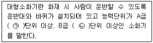
- ㉠ 10, ㉡ 5
- ㉠ 20, ㉡ 5
- ㉠ 10, ㉡ 20
- ㉠ 20, ㉡ 20
(정답률: 71%)
75. 상수도소화용수설비 설치 시 소화전 설치기준으로 옳은 것은?
- 특정소방대상물의 수평투영 반경의 각 부분으로부터 140m 이하가 되도록 설치
- 특정소방대상물의 수평투영면의 각 부분으로부터 140m 이하가 되도록 설치
- 특정소방대상물의 수평투영 반경의 각 부분으로부터 100m 이하가 되도록 설치
- 특정소방대상물의 수평투영면의 각 부분으로부터 100m 이하가 되도록 설치
(정답률: 62%)
76. 상수도소화용수설비 설치 시 호칭지름 75mm 이상의 수도배관에는 호칭지름 몇 mm이상의 소화전을 접속하여야 하는가?
- 50 mm
- 75 mm
- 80 mm
- 100 mm
(정답률: 69%)
77. 대형소화기를 설치하는 경우 특정소방대상물의 각 부분으로부터 1개의 소화기까지의 보행거리는 몇 m 이내로 배치하여야 하는가?
- 10
- 20
- 30
- 40
(정답률: 61%)
78. 포헤드를 정방형으로 배치한 경우 포헤드 상호간 거리(S) 산정식으로 옳은 것은? (단, r은 유효반경이다.)
- S = 2r × sin30°
- S = 2r × cos30°
- S = 2r
- S = 2r × cos45°
(정답률: 64%)
79. 계단실 및 그 부속실을 동시에 제연구역으로 선정 시 방연풍속은 최소 얼마 이상 이어야 하는가?
- 0.3 m/s
- 0.5 m/s
- 0.7 m/s
- 1.0 m/s
(정답률: 61%)
80. 연결살수설비의 설치 기준에 대한 설명으로 옳은 것은?
- 송수구는 반드시 65mm 의 쌍구형으로만 한다.
- 연결살수설비 전용헤드를 사용하는 경우 천장으로부터 하나의 살수헤드까지 수평거리는 3.2m 이하로 한다.
- 개방형헤드를 사용하는 연결살수설비의 수평주행배관은 헤드를 향해 상향으로 1/100 이상의 기울기로 설치한다.
- 천장·반자 중 한쪽이 불연재료로 되어 있고 천장과 반자사이의 거리가 0.5m 미만인 부분은 연결살수설비 헤드를 설치하지 않아도 된다.
(정답률: 40%)